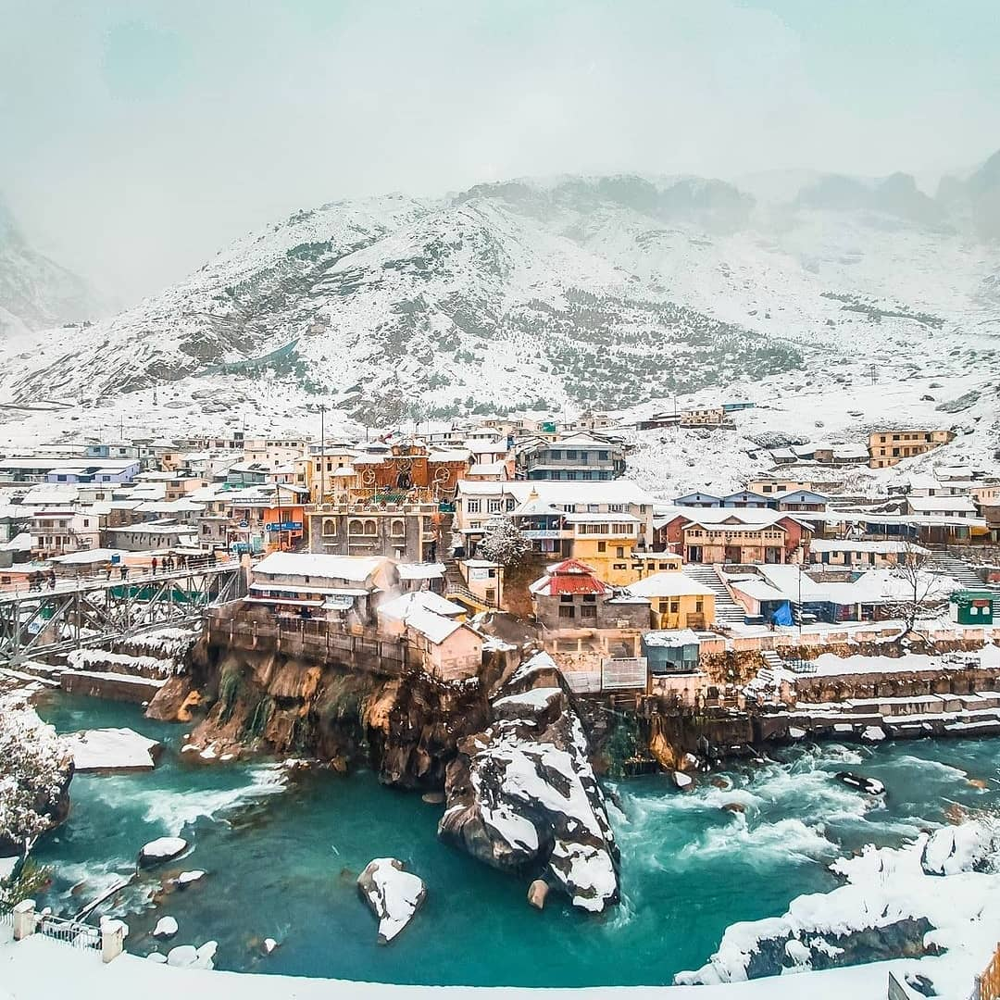

WORLD THROUGH
TRAVEL
Uttarakhand
1 Kedarnath
Kedarnath is a town located in the Rudraprayag district of Uttarakhand, India. It is situated in the Himalayas at an elevation of approximately 3,583 meters (11,755 feet) above sea level. Kedarnath is famous for its ancient and sacred temple, the Kedarnath Temple, dedicated to Lord Shiva.
The Kedarnath Temple is one of the twelve Jyotirlingas (divine representations of Lord Shiva) and holds great religious significance for Hindus. It is believed to have been built by Adi Shankaracharya in the 8th century. The temple is surrounded by snow-capped mountains and offers breathtaking views of the scenic beauty of the region.
Kedarnath attracts a large number of pilgrims and tourists from all over the world, especially during the summer months when the temple is accessible. The pilgrimage to Kedarnath is a part of the Char Dham Yatra, which includes visits to three other holy sites: Yamunotri, Gangotri, and Badrinath.
In 2013, Kedarnath and its surrounding areas were severely affected by a devastating flash flood. The flood caused significant damage to the town and the temple, but efforts have been made to restore and rebuild the affected areas.
 Save My Trip
Save My Trip
2 Badrinath
Badrinath is a town located in the Chamoli district of Uttarakhand, India. It is situated in the Garhwal Himalayas at an elevation of approximately 3,300 meters (10,800 feet) above sea level. Badrinath is renowned for its ancient and sacred temple, the Badrinath Temple, dedicated to Lord Vishnu.
The Badrinath Temple is one of the Char Dham pilgrimage sites in India and holds immense religious significance for Hindus. It is believed to have been established by Adi Shankaracharya in the 8th century. The temple is situated on the banks of the Alaknanda River and is surrounded by breathtaking mountain views.
The temple attracts a large number of pilgrims and devotees from all over the world, especially during the summer months when it is accessible. The idol of Lord Badrinarayan, a form of Lord Vishnu, is worshipped in the temple. The temple complex also includes other smaller shrines and sacred sites.
In addition to its religious significance, Badrinath is known for its natural beauty. The town is surrounded by snow-covered peaks, lush greenery, and pristine landscapes. The nearby Mana Village, located about 3 kilometers from Badrinath, is considered to be the last village of India on the Indo-Tibetan border and offers a unique cultural experience.

Save My Trip
3 Jim Corbett
Jim Corbett, also known as Edward James Corbett, was a British-Indian hunter, naturalist, and conservationist. He was born on July 25, 1875, in Nainital, Uttarakhand, India, and is best known for his efforts in wildlife conservation and his writings on the subject.
Corbett spent a significant part of his life in the jungles of the Kumaon region, particularly in the present-day Jim Corbett National Park, which was later named in his honor. He became renowned for his skills as a hunter and tracker, known for tracking and hunting down man-eating tigers and leopards that posed a threat to human lives and livelihoods.
However, over time, Corbett's perspective on wildlife changed, and he became a strong advocate for the protection and conservation of wildlife. He realized the importance of preserving the natural habitats of animals and worked towards raising awareness about the need for conservation.
Corbett's experiences and encounters with wildlife inspired him to write several books, including "Man-Eaters of Kumaon," "The Man-Eating Leopard of Rudraprayag," and "The Temple Tiger and More Man-Eaters of Kumaon." These books gained international acclaim and established Corbett as a celebrated author and conservationist.
Save My Trip
4 Gangotri
Gangotri is known as the origin of the holy River Ganges, which is considered one of the most sacred rivers in Hinduism. According to Hindu mythology, it is believed that Goddess Ganga descended to Earth at Gangotri after rigorous penance performed by King Bhagirath to cleanse the sins of his ancestors.
The main attraction in Gangotri is the Gangotri Temple, dedicated to Goddess Ganga. The temple, constructed in the 18th century, is a popular pilgrimage site for Hindus. It is open for devotees from late April to early November, as the region experiences heavy snowfall during the winter months, making it inaccessible.
Apart from the temple, Gangotri offers breathtaking views of the surrounding snow-covered peaks, pristine landscapes, and the Bhagirathi River. The region is known for its natural beauty and is popular among nature lovers, trekkers, and adventure enthusiasts.
To reach Gangotri, one has to travel by road from Rishikesh or Dehradun. The route takes you through picturesque valleys and scenic landscapes. Accommodation options in Gangotri include guesthouses and ashrams that cater to the needs of pilgrims and tourists.
 Save My Trip
Save My Trip